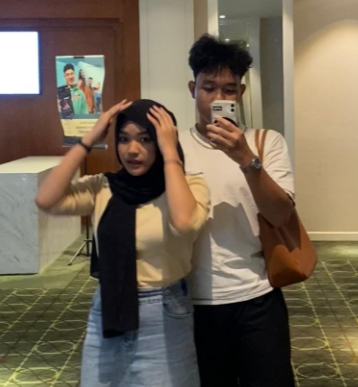
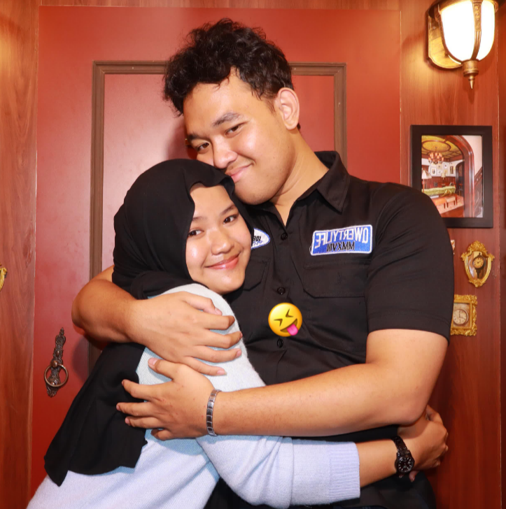

Akuu ga bakall pernah bosan buat bilang kamu itu lelakii terbaikk yang datang dan memilih akuu di hidup kamuu,akuu akann selaluu bilangg kamuu adalahh rasaa syukur terbesar aku, kenapaa gituu meidyy? karenaa dengan aku dipertemukan dengan kamu aku bisa berubah jauhh lebih baik, akuu bisaa berhijabb dann banyakk lagii kehadiran kamu di hidup aku tuh bener bener jadi suatu kebahagian yang ga bakal pernah habis sayangg, akuu sangatt merasaa di cintaii ketikaa kamu memilihh disiniii bersamaa akuu kamu coba jursan yang ga pernah ada di otak kamu

akuu cumaa mau kamu sukses di hidup kamu sayanggg, kamu berdiri di kaki kamu sendiri kamuu bisa gapaii hal hall yang di inginkan oleh apta kecil di dalamm diri kamuu, akuu cuma mauu melangkah beriringan bersama kamu tanpa harus ada yang tertinggal satu langkah pun, aku akan melangkah bersama kamu walaupun aku tau aku bakal jatuh dah terluka.
Akuu cumaa mauu kamuu bersikap selayaknya laki" yang akan di contoh oleh wanitanyaa teruss lahh bersikap lemah lembut sayanggkuu, karnaa hal itulahh yang buatt aku jatuh cinta sama kamu, akuu iniii pasangan kamu yang bakal selalu ada di suka maupun dukaa kamuu aku mauu kamuu jangan jahat" sama aku ya sayangg, aku cuma menumpang kasih kasih sayang yang ga aku dapett
Tiapp pelukann kamuu itu ngajarin akuu sesuatu yang buat aku nyaman bahagia dan tidak ingin kehilangan itu bukan cuma tentang uang dan keberhasilan,Tapii pelukann kamuu dan hadirnya kamu di hidup aku melebihi dari ituu semuaa, maaff kalo aku seperti anak kecil yang selalu mau di pelukk heheheh.